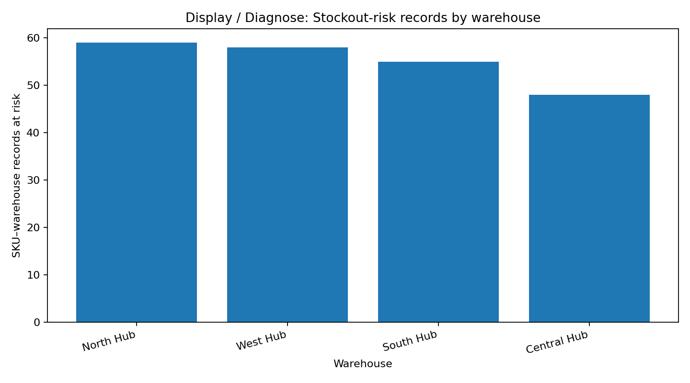
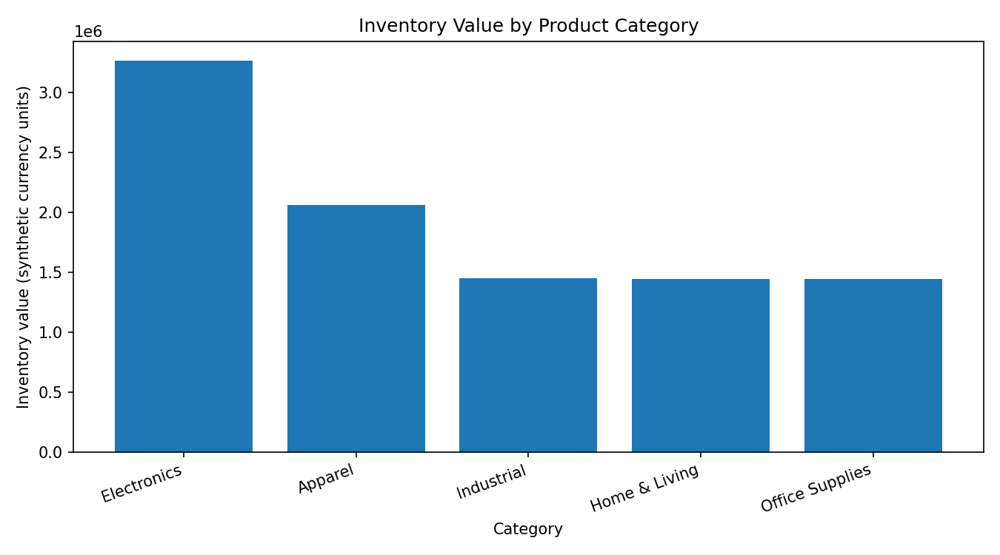
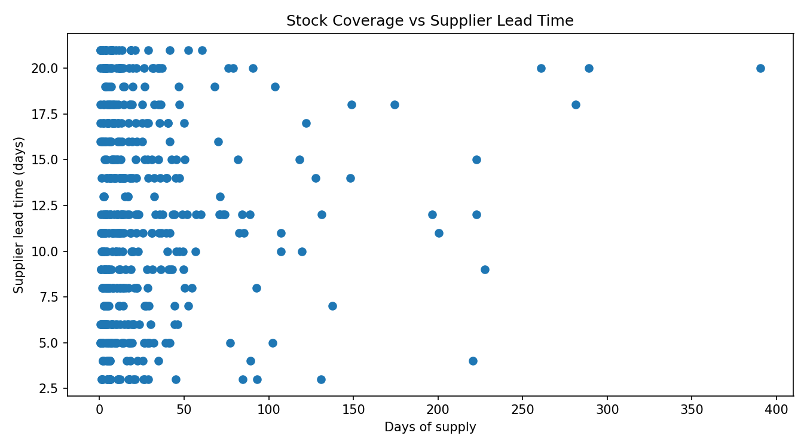

SQL · Python · Infor Birst
Inventory & Stock Risk Analytics
A portfolio demo for stock coverage, reorder points, estimated inventory value and replenishment risk—with an Infor Birst data-model and dashboard build guide.
Demo-data note: All records are synthetic learning data, not real company or client information. This repository contains a Birst guide, not a live deployed Birst dashboard.
Project at a glance
SKUs120Synthetic products
Warehouses4Sample locations
Snapshot records480SKU × warehouse
Snapshot date12 Oct 2026Single date
Business questions
- Which records have less coverage than supplier lead time?
- Which records are below reorder point?
- How does estimated inventory value vary by category and warehouse?
- Which rows should be prioritized for replenishment review?
KPI definitions
- Days of Supply = On-hand ÷ Average Daily Demand
- Stockout Risk = Days of Supply below lead time
- Inventory Value = On-hand × Unit Cost
- Below Reorder Point = On-hand at/below threshold
These are simplified demonstration rules, not production replenishment policy.
Sample-data charts
Stockout-risk records by warehouse

Inventory value by category

Stock coverage vs supplier lead time

How to use this project
1
Model the dataFact snapshot joined to Product and Warehouse dimensions; validate keys and grain.
2
Analyze with SQL + PythonCalculate risk flags, inventory value, summary tables and replenishment-priority rows.
3
Build in Infor BirstFollow the guide to create a practice subject area, Visualizer reports, KPI tiles, filters and reconciliation checks.
Files
📄Product master CSVSKU, category, unit cost and reorder point📄Warehouse master CSVWarehouse IDs and regions📄Inventory snapshot CSV480 synthetic records🐍Python analysisRecalculate KPIs and charts⌘PostgreSQL schemaFact and dimension tables⌘Inventory KPI SQLRisk and replenishment queries⌘Data quality checksValidation SQL📊Replenishment listDemo rows to review📊KPI summaryGenerated demo metrics📘Data dictionaryField definitions and grain
Run locally
From the extracted project folder, run:
python -m pip install -r requirements.txt
python analyze_inventory.py
python -m unittest test_inventory_data -v